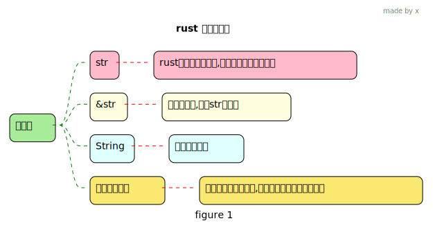
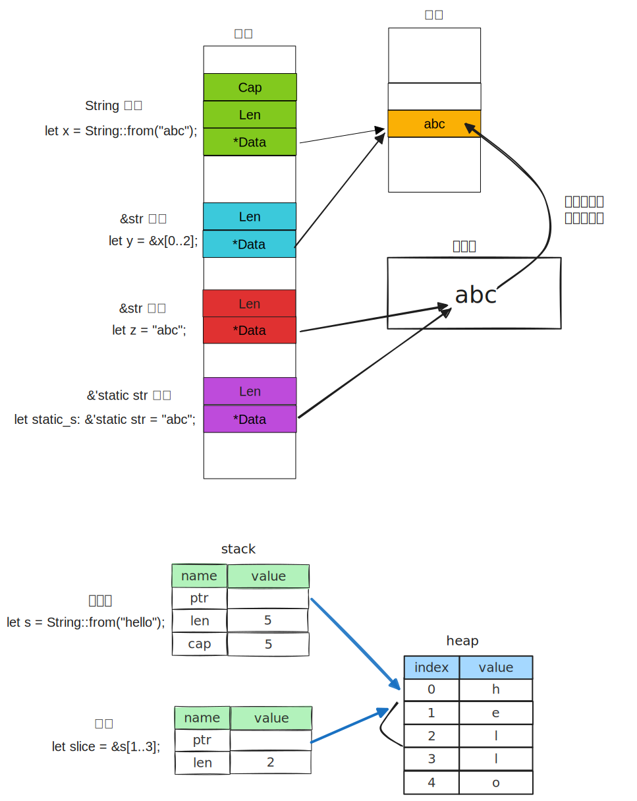

1 vector
Tip
- 只能存储相同类型的数据
- 在内存中连续存放
- 容量可以在执行过程中动态扩大和缩放
- 既然是动态的,那么它必定是要在堆上分配的.
1.1 写
fn main() {
// 第一种方式,存放的类型是i32,
// 也可以不指定是什么类型的(去掉Vec<i32>),push 后 就推断出什么类型了
let mut v: Vec<i32> = Vec::new();
// 添加
v.push(5);
v.push(6);
// 第二种定义方式
// 宏等价于调用 Vec::new 创建一个新的空 vector，然后向其中添加元素
let mut y=vec![1,2,3,4,5];
// 第三种 通过迭代器创建
let v: Vec<i32> = (0..5).collect();
println!("{:?}", v);
// 第四中 设置 capacity
let mut v = Vec::with_capacity(5);
v.push(1);
println!("{}-{}", v.capacity(), v.len());
// 插入和删除
let mut v = vec![10, 20, 30, 40, 50];
// 在索引为 3的地方插入 35
v.insert(3, 35);
assert_eq!(v, [10, 20, 30, 35, 40, 50]);
// 移除索引为 1的元素
v.remove(1);
assert_eq!(v, [10, 30, 35, 40, 50])
}1.2 读单个元素
#[test]
fn test() {
let v = vec![1, 2, 3, 4, 5];
let third: &i32 = &v[2];
println!("The third element is {third}");
// get的返回类型是 Option
let third: Option<&i32> = v.get(2);
match third {
Some(third) => println!("The third element is {third}"),
None => println!("There is no third element."),
}
}越界,报错
1.3 存储不同类型的数据
1.4 遍历
2 hashmap
use std::collections::HashMap;
fn main() {
// 如果仅仅只有这个语句, 则会报错,因为编译器无法知道数据类型,就无法分配内存了
// let mut s = HashMap::new();
// 这样就不会了
let mut scores: HashMap<String, i32> = HashMap::new();
// 插入元素
scores.insert(String::from("Blue"), 10);
scores.insert(String::from("Yellow"), 50);
// 读取
let team_name = String::from("Blue2");
// get() 返回 类型是Option<&V>,没有的话就是 返回 None
// copied() 将 返回的Option<&i32> 变成 Option<i32>
// unwrap_or(0) 表示如果该key ,则返回一个 0
let score = scores.get(&team_name).copied().unwrap_or(2);
println!("{}", score);
// 遍历
for (key, value) in &scores {
println!("{key}: {value}");
}
// 更新元素, 还是用insert 会覆盖
scores.insert(String::from("Blue"), 12);
// key Yellow 不存在,才添加
// 返回一个value的可变借用
scores.entry(String::from("Yellow")).or_insert(50);
let text = "hello world wonderful world";
let mut map = HashMap::new();
for word in text.split_whitespace() {
// 第一次 word key 不存在的时候, 插入 0, 返回value的可变借用
// 下面的操作才会是 *count +=1
// 第二次来, 存在, 返回旧 value 的可变借用 ,后面 还是 *count +=1
let count = map.entry(word).or_insert(0);
*count += 1;
}
println!("{:?}", map);
println!("{:#?}",map); // 格式化打印
}所有权
3 字符串
字符串相关的几种定义
3.1 str
- 我们可以得到这个
a和b的类型是&str,在没有学习切片前,仅从这个类型名称看,我们可以推断&str是一个指向字符串字面量的指针. - 既然是 &这个操作, 那么
*a指向的类型似乎就是str了,a和b指向的str类型占用的空间不同,这样说来str类型的长度是可变的. - 所以我们无法在代码中直接使用
str类型, 因为编译期间需要确定变量的大小. - 那么不难推断出
&str这种引用可变长度类型的类型, 除了有指针指向str外, 还必须有一个信息来存储你引用的长度.
3.2 &str
字符串切片: 只是对一块内存空间的借用,无所有权
use std::mem;
fn main() {
// 字符切片 &str , abc 这个是 字符串字面量
let x = "abc";
println!(
"x指向的字符串实际地址:{:p}--长度:{}--占用字节数: {}",
x.as_ptr(),
x.len(),
mem::size_of_val(&x)
);
let y: &'static str = "abc";
println!(
"y指向的字符串实际地址:{:p}--长度:{}--占用字节数: {}",
y.as_ptr(),
y.len(),
mem::size_of_val(&y)
);
// 字符串 String
let z = String::from(x);
println!("z指向的字符串的地址:{:p}", z.as_ptr());
let s = String::from("hello world");
// 字符串切片
let s2 = &s[0..4]; // s2 内容是 "hell"
println!("String s:{:p}", s.as_ptr());
println!("&str s2:{:p}", s2.as_ptr());
println!("{s}-{s2}");
}看看是否能修改
3.3 String
字符串:有这块内存空间的所有权
是一种集合类型,所以前面集合类型的操作也适用
3.3.1 基础操作
use std::mem;
fn main() {
let s1 = "hello".to_string();
// 空字符串
let s2 = String::new();
let s3 = " world".to_string();
// + 法 , 第二个变量 要是 字符串的借用
let c = s1 + &s3; //s1 被move 了
println!("{}", c);
// format! 宏 来拼接字符串, 类似 println! ,只不过返回结果,不打印
let s1 = String::from("tic");
let s2 = String::from("tac");
let s3 = String::from("toe");
// let s = s1 + "-" + &s2 + "-" + &s3;
let s = format!("{s1}-{s2}-{s3}");
println!("{}-{}-{}", s1, s2, s3); // 都可用
let mut x = String::from("abc");
println!("{:p}", &x);
println!("{}", mem::size_of_val(&x));
x.push_str("我们");
println!("{}", x);
println!("{}", mem::size_of_val(&x));
println!("{:?}-{}-{}", x.as_ptr(), x.len(), x.capacity());
x.pop();
println!("{:?}-{}-{}", x.as_ptr(), x.len(), x.capacity());
x.push('x');
println!("{:?}-{}-{}", x.as_ptr(), x.len(), x.capacity());
// cap 这个显示的值和 内部实际预留空间,应该是不同, 参考go的设计
x.push_str("hello world python golang rust c++ c# java php");
println!("{:?}-{}-{}", x.as_ptr(), x.len(), x.capacity());
}3.3.2 切片
fn main() {
let s = String::from("hello");
// [start_index..end_index]
let slice1 = &s[0..2];
let slice2 = &s[..2]; // 同上
println!("{}-{}", slice1, slice2);
let len = s.len();
let slice3 = &s[3..len];
let slice4 = &s[3..]; //同上
println!("{}-{}", slice3, slice4);
let slice5 = &s[0..len];
let slice6 = &s[..]; // 同上
println!("{}-{}", slice5, slice6);
}3.3.3 索引操作?
String 类型无法进行 索引操作
3.3.4 三种方式读取
String 类型是对 Vec[u8]的一种包装
fn main() {
let s1 = String::from("नमस्ते");
println!("{}", s1.len());
// 1. 以字节(byte) 的形式
for b in s1.bytes() {
println!("{b}");
}
// 2. 以unicode 标量值(scalar values)的形式
// 打印了 每一个字(或字母)
for c in "hello我们".chars() {
println!("{}", c);
}
// 但是 这个好像不对了,
// .chars() 用unicode 编码的方式来读取,按理说应该能读取到想要的字才对
// 毕竟 unicode 编码了全世界的字符(每个字符都有对应的unicode编码)
// 原因是 梵文中的某些字符可能由多个Unicode标量值组成，这些标量值在视觉上被视为一个整体
// 所以 这里只打印了 "真正字符"的一部分
for c in s1.chars() {
println!("{}", c);
}
println!("=============");
// 3. 获取真正更接近 字母的 字形簇 (grapheme clusters)
// 需要添加 第三方crate: cargo add unicode_segmentation
use unicode_segmentation::UnicodeSegmentation;
for grapheme in s1.graphemes(true) {
println!("{}", grapheme);
}
}3.4 字节字符串
这个实际是字节数组